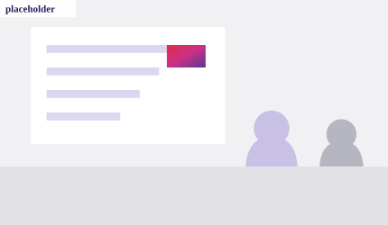
1 · Transform
Retail Technology Transformation & Business Consulting
Van strategie en operating model tot implementatie en adoptie: CGI maakt complexe technologietransformaties bestuurbaar en realiseerbaar.
Onderwerpen
CGI Retail & Consumer Services
Van strategie tot winkelvloer
CGI helpt retailers hun technologie te transformeren, waarde te realiseren met Data, Cloud & AI en hun winkel- en IT-operatie wereldwijd betrouwbaar te laten draaien.
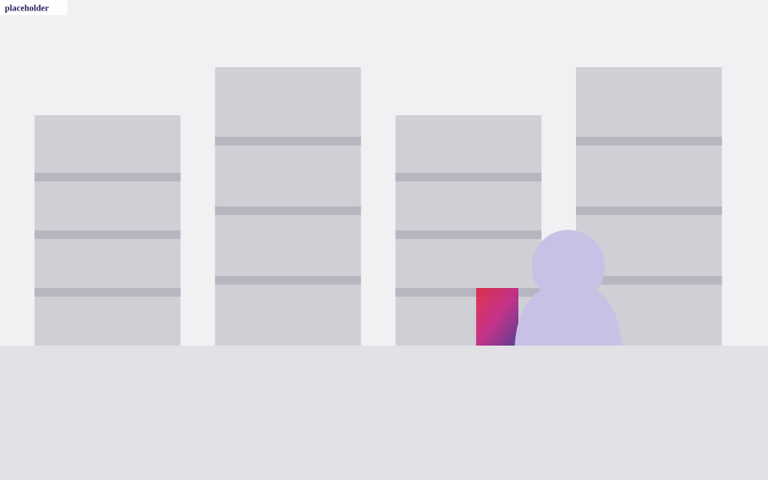
Beeld-placeholder — vervang door bestaand CGI-retailbeeld
Retailers moeten tegelijkertijd vernieuwen en blijven presteren. AI, veranderende klantverwachtingen, druk op marges, legacytechnologie en toenemende operationele complexiteit vragen om keuzes die niet alleen strategisch goed zijn, maar ook uitvoerbaar op de winkelvloer.
Inzichten uit 209 klantgesprekken laten zien welke prioriteiten de sector vormgeven
#1
Businessgroei is de belangrijkste businessprioriteit geworden
Retail-, consumer- en servicesorganisaties werken met een pragmatische mindset, gericht op meetbare businessresultaten.
78%
van de organisaties noemt AI een strategische focus
De adoptie van AI verloopt ongelijk, doordat organisaties investeringsprioriteiten, operationele gereedheid en implementatiecomplexiteit tegen elkaar afwegen.
68%
noemt modernisering, cloud en het terugdringen van legacy als IT-prioriteit
Organisaties geven prioriteit aan modernisering van kernapplicaties, voor betere schaalbaarheid, operationele efficiëntie en weerbaarheid op lange termijn.
Bron: 2026 CGI Voice of Our Clients — retail, consumer & services. Bekijk het volledige onderzoek
Van het bepalen en realiseren van de transformatie tot het structureel ondersteunen van de dagelijkse retailoperatie.

1 · Transform
Van strategie en operating model tot implementatie en adoptie: CGI maakt complexe technologietransformaties bestuurbaar en realiseerbaar.
Onderwerpen
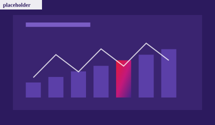
2 · Create value
Van gefragmenteerde data, cloudcomplexiteit en losse AI-pilots naar schaalbare oplossingen die aantoonbare waarde leveren in de dagelijkse retailoperatie.
Onderwerpen
3 · Run
Betrouwbare winkel- en IT-operaties met global support, lokale field services, store roll-outs, SIAM en managed IT services.
Onderwerpen
1 · Transform
Van strategie en operating model tot implementatie en adoptie: CGI helpt retailers complexe technologietransformaties bestuurbaar te maken en succesvol te realiseren.
Strategie, architectuur en delivery zijn niet met elkaar verbonden. Landen en businessunits werken met eigen prioriteiten en platformen, programma’s lopen naast elkaar en besluitvorming duurt lang. Het gevolg: veel initiatieven, weinig aantoonbare voortgang.
Een transformatie wordt pas bestuurbaar als businessdoelen, capabilities, architectuur, governance en delivery in één roadmap samenkomen — met duidelijk eigenaarschap per stap en een realistische volgorde. Wij ontwerpen die roadmap en blijven verantwoordelijk voor de realisatie.
Conceptvoorbeelden — te vervangen door goedgekeurde klantvoorbeelden
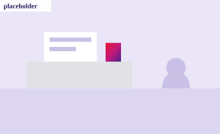
POS & platform
Eén selectie- en uitrolaanpak voor kassa- en winkelsystemen over landsgrenzen heen.
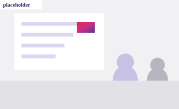
Roadmap & governance
Lopende programma’s, architectuur en businessprioriteiten in één besluitvormingsritme.
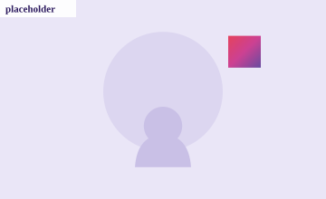
Unified commerce
Kanalen, voorraad en klantdata die elkaar niet meer tegenwerken.
Conceptquote — te vervangen door goedgekeurd klantcitaat
We wisten wél waar we naartoe wilden. Wat ontbrak, was de volgorde — en iemand die bij de uitvoering bleef zitten.
Concept — inhoud nog vast te stellen
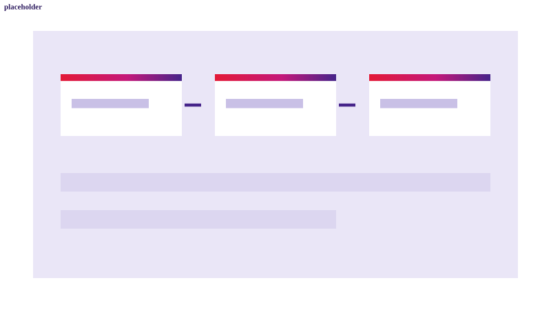
Het model waarmee we businessdoelen, capabilities, architectuur en delivery in één plaat leggen, inclusief afhankelijkheden en beslismomenten.
Logo-placeholders — klantlogo’s alleen plaatsen met schriftelijke goedkeuring
2 · Create value
Van gefragmenteerde data, cloudcomplexiteit en losse AI-pilots naar schaalbare oplossingen die aantoonbare waarde leveren in de dagelijkse retailoperatie.
Er is veel data en er zijn veel experimenten, maar de weg naar productie ontbreekt. Databronnen sluiten niet op elkaar aan, eigenaarschap is onduidelijk, integratie met bestaande retailprocessen is complex en veelbelovende AI-pilots blijven daardoor in de pilotfase steken.
Succesvolle AI in retail begint niet bij het model, maar bij het klantprobleem, betrouwbare data, integratie, eigenaarschap en een realistische route naar productie en beheer. Wij prioriteren use-cases op businesswaarde en bouwen het fundament mee dat opschaling mogelijk maakt.
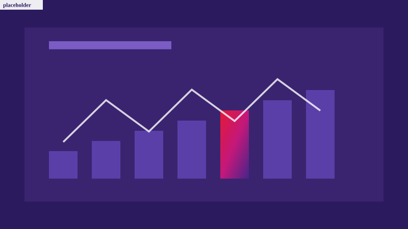
Conceptvoorbeelden — te vervangen door goedgekeurde klantvoorbeelden
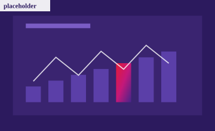
Advanced analytics
Voorspellingen die daadwerkelijk in het inkoop- en planningsproces landen.
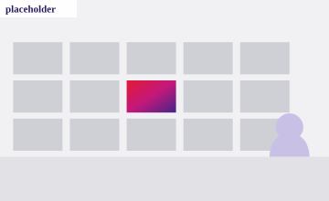
Data foundations
Gedeelde definities, herkomst en eigenaarschap in plaats van losse rapportages.
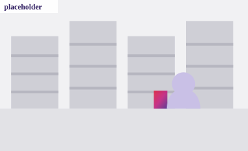
Agentic retail
AI die vragen op de winkelvloer beantwoordt binnen de bestaande systemen.
Conceptquote — te vervangen door goedgekeurd klantcitaat
De pilot werkte. De vraag was hoe we het in productie kregen zonder dat het beheer ons opbrak.
Concept — inhoud nog vast te stellen
Waarmee we use-cases scoren op businesswaarde, datagereedheid, integratie-impact en beheerbaarheid — voordat er gebouwd wordt.
Logo-placeholders — klantlogo’s alleen plaatsen met schriftelijke goedkeuring
3 · Run
Betrouwbare winkel- en IT-operaties met global support, lokale field services, store roll-outs, SIAM en managed IT services.
Winkeltechnologie moet altijd werken, ook tijdens piekmomenten en roll-outs. Lokale supportmodellen, meerdere leveranciers en beperkte end-to-end regie maken incidentafhandeling, winkelopeningen en refits echter onnodig complex en onvoorspelbaar.
Operationele betrouwbaarheid is een ontwerpkeuze, geen toeval. Met één integraal supportmodel — global service management, lokale field services, duidelijke leveranciersregie en gestandaardiseerde processen — wordt de winkelvloer minder verstoord en de operatie beter voorspelbaar.
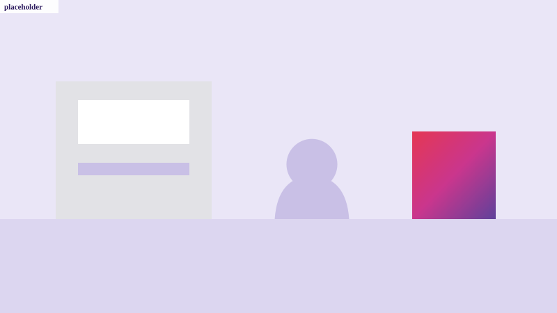
Conceptvoorbeelden — te vervangen door goedgekeurde klantvoorbeelden
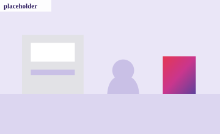
Support & field services
Global service management met lokale field services op de winkelvloer.
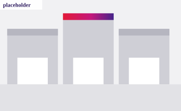
Roll-outs
Voorspelbare planning, standaardconfiguratie en oplevering zonder verrassingen.
SIAM
Eén partij die de keten overziet, escalaties oppakt en op resultaat stuurt.
Conceptquote — te vervangen door goedgekeurd klantcitaat
Bij een storing wil ik niet weten wélke leverancier het is. Ik wil weten wanneer de kassa weer werkt.
Concept — inhoud nog vast te stellen
Waarmee we support, field services, SIAM, leveranciersregie, roll-outs en operationele sturing per niveau beoordelen en een verbeterpad vastleggen.
Logo-placeholders — klantlogo’s alleen plaatsen met schriftelijke goedkeuring
Drie voorbeelden van vraagstukken waarvoor retailers CGI inschakelen — opgebouwd volgens dezelfde structuur: vraagstuk, aanpak en resultaat.
Conceptvoorbeeld — te vervangen door goedgekeurde CGI-klantcase
Klantcase · Technology Transformation
Verschillende landen en businessunits werkten met eigen prioriteiten, platformen en implementatieplannen. Hierdoor ontbrak samenhang tussen strategie, architectuur en delivery.
CGI bracht businessprioriteiten, capabilities, architectuur en lopende programma's samen in één transformatieroadmap en governancemodel.
Conceptvoorbeeld — te vervangen door goedgekeurde CGI-klantcase
Klantcase · Data, Cloud & AI
De organisatie had meerdere AI-experimenten gestart, maar miste betrouwbare data, eigenaarschap, integratie en een duidelijk model om succesvolle toepassingen op te schalen.
CGI hielp use-cases te prioriteren, het datafundament te versterken en een route te ontwerpen van experiment naar productie, adoptie en beheer.
Conceptvoorbeeld — te vervangen door goedgekeurde CGI-klantcase
Klantcase · Retail Operations
Lokale supportmodellen, verschillende leveranciers en beperkte end-to-end regie maakten incidentafhandeling en store roll-outs onnodig complex.
CGI ontwierp een geïntegreerd supportmodel met global service management, lokale field services, duidelijke leveranciersregie en gestandaardiseerde processen.
Compacte trajecten met een duidelijke uitkomst: inzicht in prioriteiten, afhankelijkheden en concrete vervolgstappen.
Concept offering
Een compacte review van strategie, roadmap, governance, architectuur en delivery-risico's. De uitkomst is een overzicht van prioriteiten, afhankelijkheden en concrete vervolgstappen.
Concept offering
Identificeer welke Data- en AI-use-cases de meeste waarde kunnen creëren en wat nodig is om deze verantwoord en schaalbaar te realiseren.
Concept offering
Beoordeel de volwassenheid van support, field services, SIAM, leveranciersregie, store roll-outs en operationele sturing.
Artikelen, viewpoints, frameworks en onderzoek — gefilterd op het expertisedomein waar u aan werkt.
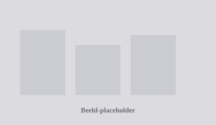
Concept content
Artikel
Waarom succesvolle AI in retail niet begint bij het model, maar bij het klantprobleem, betrouwbare data, integratie, eigenaarschap en een realistische route naar productie.
Concept content
Viewpoint
Zeven oorzaken waardoor goede plannen onvoldoende resultaat opleveren — en hoe business, architectuur, governance en delivery beter op elkaar kunnen aansluiten.
Concept content
Executive brief
Welke keuzes bepalen of winkeltechnologie tijdens drukke periodes beschikbaar, ondersteunbaar en schaalbaar blijft?
Geen insights binnen dit filter. Kies een ander expertisedomein.
Compacte sessies voor retail technology leiders — van besloten roundtables tot een breed flagship event.
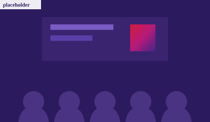
Concept event — datum en programma nog te bevestigen
Executive roundtable
Een besloten gesprek voor CIO's, CDO's en AI-leads over de route van experiment naar productie, adoptie en aantoonbare businesswaarde.
Concept event — datum en programma nog te bevestigen
Breakfast session
Een interactieve ontbijtsessie over store uptime, global support, field services, leveranciersregie en peak readiness.
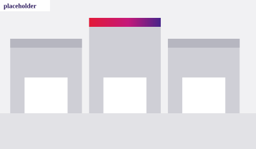
Concept event — datum en programma nog te bevestigen
Flagship event
Presentatie van de belangrijkste retail technology trends, aangevuld met inzichten van klanten, CGI-experts en partners.
Retailtransformaties vragen om een samenhangend ecosysteem. CGI combineert onafhankelijke advisering, retailkennis, systeemintegratie en managed services met de technologie van wereldwijde en gespecialiseerde partners.
Neutrale logo-placeholders — vervang door goedgekeurde CGI-partnerlogo's
Ieder expertisedomein heeft een vast aanspreekpunt binnen CGI Retail & Consumer Services.
Placeholder — naam, functietitel, foto en contactgegevens nog aan te leveren
[functietitel]
Retail Technology Transformation & Business Consulting
Werkt met retailers aan technologiestrategie, roadmaps, operating models en governance, en aan het bestuurbaar maken van complexe transformatieprogramma's van strategie tot realisatie.
Placeholder — naam, functietitel, foto en contactgegevens nog aan te leveren
[functietitel]
Retail Data, Cloud & AI
Helpt retailers hun datafundament te versterken, cloud te moderniseren en AI-use-cases van experiment naar productie te brengen, met aandacht voor waarde, integratie en verantwoord gebruik.
Placeholder — volledige naam, functietitel, foto en contactgegevens nog aan te leveren
[functietitel]
Retail Operations & Managed IT Services
Verantwoordelijk voor betrouwbare winkel- en IT-operaties: global support, field services, store roll-outs, SIAM en managed services voor internationale retailorganisaties.
Werk aan zichtbare retailtransformaties, Data-, Cloud- en AI-oplossingen en betrouwbare winkeloperaties voor toonaangevende organisaties. Binnen CGI Retail & Consumer Services combineer je diepgaande expertise met verantwoordelijkheid voor resultaat — van strategie tot dagelijkse operatie.
Drie voorbeeldrollen binnen CGI Retail & Consumer Services. De actuele vacatures worden idealiter automatisch uit het centrale CGI-vacaturesysteem geladen.
Dummy vacature — niet daadwerkelijk openstaand
Retail Technology Transformation
Je werkt met retailers aan technologiestrategie, roadmaps en operating models, en begeleidt de stap van besluit naar realisatie.
Dummy vacature — niet daadwerkelijk openstaand
Retail Data, Cloud & AI
Je vertaalt retailvraagstukken naar data- en AI-oplossingen en werkt aan de route van use-case naar productie en adoptie.
Dummy vacature — niet daadwerkelijk openstaand
Retail Operations & Managed IT
Je houdt regie op support, leveranciers en service-integratie voor internationale winkeloperaties, en verbetert de operationele keten.
Of het nu gaat om een complexe technologietransformatie, het opschalen van Data & AI of het betrouwbaar ondersteunen van uw winkeloperatie: onze retail-experts denken graag mee over een concrete volgende stap.
Prototypeformulier — er worden geen gegevens verzonden